Outcome Testing¶
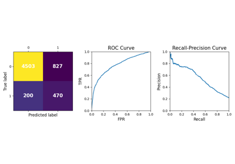
Accuracy: Classification
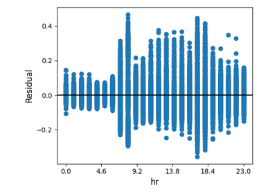
Accuracy: Regression
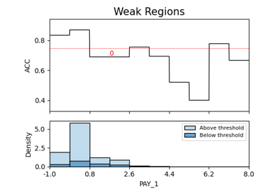
WeakSpot: Classification
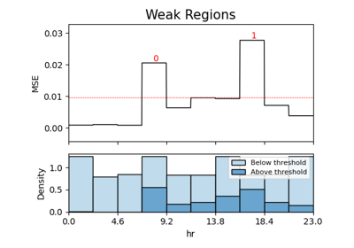
WeakSpot: Regression
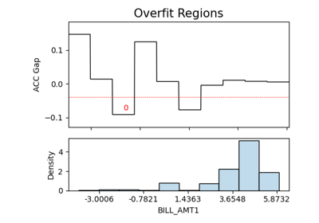
Overfit: Classification
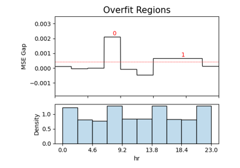
Overfit: Regression
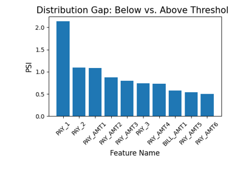
Reliability: Classification
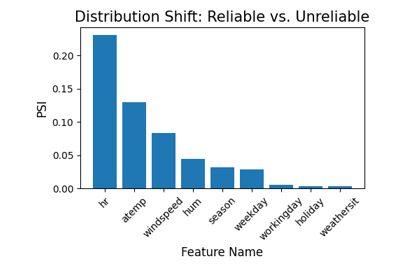
Reliability: Regression
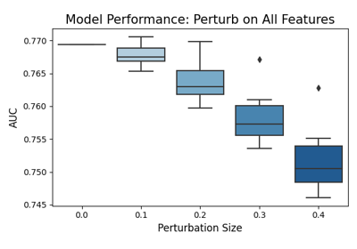
Robustness: Classification
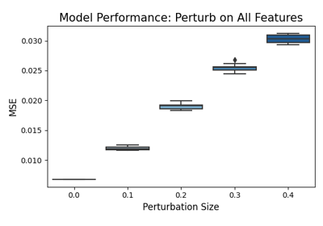
Robustness: Regression

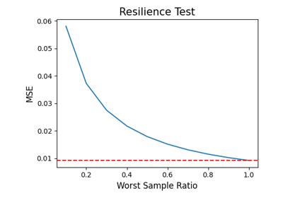
Resilience - Regression


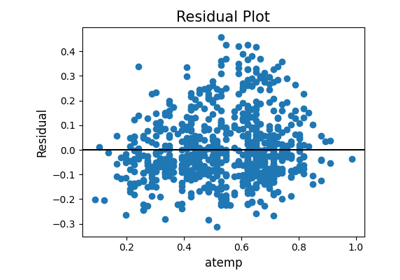
Segmented Diagnose (Regression)
Segmented Diagnose (Regression)
Scored Test: Classification
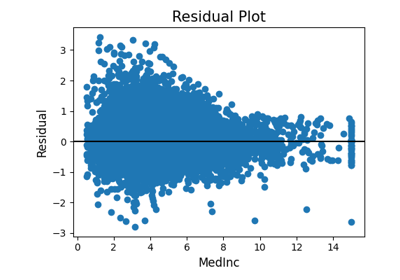
Scored Test: Regression